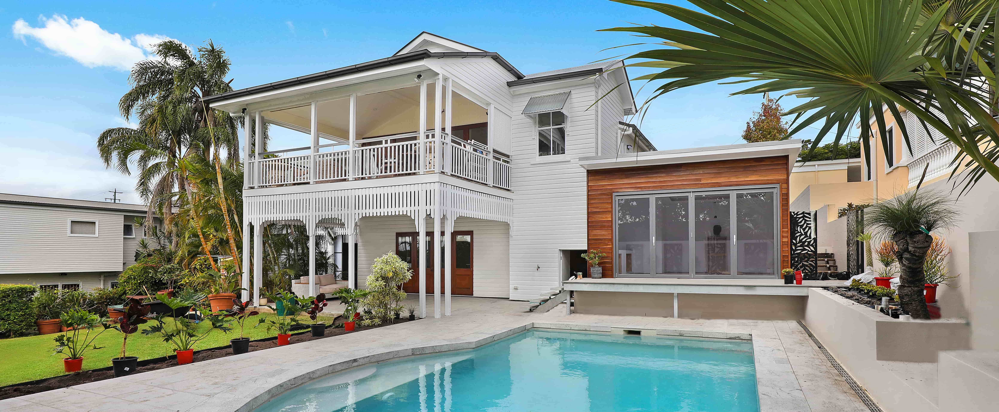

Complete Insurance Agency
Protect Your Future with Insurance - Get the Coverage You Need Today!
Home, Auto, Business
Our Insurance Products
Auto, Motorcycle, RV
Globalgreen Insurance Agency is committed to finding drivers affordable coverage and available policy discounts, while also delivering superior customer service. That's why we've chosen to partner with GlobalGreen. The advantages begin with great coverage at a great price, but many drivers find ways to improve their policy year after year. From the Vanishing Deductible® program to free policy evaluations, get a better vehicle insurance experience with Globalgreen Insurance Agency.
Globalgreen Insurance Agency will help identify and eliminate any gaps in your coverage.
Globalgreen Insurance Agency can answer any questions drivers have about claim limits, policy options, or specific types of vehicles and household drivers. Don't get overwhelmed by the complexities of auto insurance. Call us at (352) 600-0500 and make your choices quickly and confidently.
Home Insurance
Buying a home is a big step; this decision holds the key to a stable, more financially sound future. Homeowners and their families deserve the right kind of protection, which is why Globalgreen Insurance Agency offers comprehensive home insurance coverage. Protecting this important investment goes a long way towards ensuring that your home is there for you today and tomorrow. Enjoy knowing that you are creating a legacy that will see you through the many years to come. Globalgreen Insurance Agency is here to help you find the right coverage for your home.
Our agency offers personalized homeowners insurance products that give homeowners the coverage they need. Customizing insurance solutions to your needs is part of what makes our work so valuable. We go the extra mile to make sure that your home receives the coverage it requires. The result is a policy that addresses the distinctive needs of your home, the surrounding property, and even structures like free-standing garages.
If you bought your home a while back but are looking to switch to a different policy. By evaluating your current needs as a homeowner we can make recommendations regarding improved lines of coverage. This is a great way to get personalized advice that speaks directly to your individual concerns.
Life Insurance
Getting married, having kids and sending them off to college are all exciting milestones. As your life changes, so do your insurance needs. You might have concerns about securing your family’s future when you are no longer around. You might also have some financial concerns about how they will manage any debts that you leave behind.
At Globalgreen Insurance Agency, we understand the need to provide your loved ones with a financial safety net. Whether you already have a policy and are looking to adjust your coverage or this is your first-time shopping for life insurance, we can handle your insurance needs.
We work with several carriers to provide friendly service and diverse coverage options to customers. We recommend speaking to a life insurance agent for assistance in getting the right coverage for your unique situation.
There are several types of life insurance for you to consider, such as term, whole, universal and more. Choosing the right coverage may seem overwhelming. Fortunately, Globalgreen Insurance Agency can go over options to help you find a solution that provides the amount of coverage that meets your needs and can help you achieve your long-term financial goals.
If you are ready to learn coverage options, call or text the office at (352) 600-0500. Tina will be more than happy to evaluate your circumstances to help you get the right solution.
Business Insurance
The business you own is something you wake up thinking about, and the issues of the day linger in your mind way past closing time. Whether your business is properly insured may be one of those issues, and if so, we'd like to help. Globalgreen Insurance Agency works with several carriers to offer you insurance coverage to put your mind at ease. There are many different options, and we can combine those that are the most appropriate for your specific kind of business so that you will be covered for potential problems that are of the most concern to you.
A business owner's policy, also known as a BOP, might be the perfect solution for coverage. If you have fewer than 100 employees and less than $5 million in annual sales plus property or equipment you want to protect, a BOP is worth exploring. To begin with, you'll be covered for property damage and general liability. It might be wise to add crime insurance to protect your business against fraud or theft, and equipment breakdown insurance which covers mechanical and electrical equipment as well as your computers. Speaking of computers, you might also want to add cyber liability insurance, which is great to have if someone hacks your computers and your electronic data is compromised.
We know how hard you work to keep your customers happy and your company running on an even keel. When you're ready to talk about insurance protection, just give Globalgreen Insurance Agency a call at (352) 600-0500. Having comprehensive coverage for your business will mean one less thing you have to think about when you wake up in the morning.
Frequently Asked Questions
Are They Independent Insurance Agents OR Captive Agents?
What is the difference? Independent agents aren't tied to any specific insurance company. An independent agent can shop around and find you the best rate with different insurance companies (The Hartford, Geico, State Farm, etc.). A captive agent—or direct agent—works for a specific insurance company and can only offer you policies and rates directly through that company. A third option is to work with an insurance broker. Insurance brokers act as an independent agent that is loyal to you as the customer. They often charge a percentage of the policy rate (15% is common) as the fee to work with them.
Can You Get a Referral?
Check with other local small business owners, family, and friends. Do they have a particular agent or broker that they’ve worked with? Are there insurance professionals they would recommend who have expertise in the field you're in? Getting a referral from someone you trust is a great way to connect with a trustworthy agent.
What Type of Insurance Coverages Do They Offer?
Even if you're referred to a great agent with solid credentials, you need to be sure they offer the types of policies that you need. Some insurance companies or independent agents don’t work in every insurance niche. For example, if you’re a general contractor, you need an inland marine insurance policy to protect your tools and equipment while in transit or stored at a job site. If your insurance agent/insurance company doesn’t offer coverage options you need, you may need to shop around for a different insurance agency. While that is just one example, you need to do some research in advance to be familiar with the type of insurance policy or policies you may need.
Is the Insurance Agent an Expert in Your Industry?
Has your agent shown a level of expertise about your industry? Are they able to show familiarity with your industry and make recommendations specific to it? It’s wonderful if you find an agent that has the right licenses and great referrals—but they need to know your business. If you choose to work with younger or inexperienced insurance agents to give them a change to grow in their expertise, it’s commendable. You have to be clear that you’re fine if they don’t have an answer on specific questions you may have and give them time to get more information. But if you’re looking for an insurance expert, make sure you ask them pertinent questions about your industry to gauge their level of expertise and knowledge.
Can You Interview Them?
It’s important that you can have a conversation with the agent or broker that you’re planning on working with. Will they make time in their schedule to answer any question you may have? Will they explain the different insurance options available to you? Are they trying to hard sell you on one particular policy? You can often get a feel for someone in a simple conversation.
Ask Them For a Quote
One of the best ways to gauge the expertise and professionalism of an agent is their quote process. Have they reviewed several options to meet your insurance needs? Will they explain the different policy options, including price and coverage differences? A smooth process can be an indicator of future results. It's an integral part of the process that needs to go well.
Do They Handle Claims?
Most agents that work with larger insurance companies (or even independently) don’t handle claims processing or adjusting. However, they should be able to articulate what the claims process looks like, how to contact their claims department, file a claim, etc. If they can’t walk you through the process, who do you turn to when you need to file a claim? What if you file it incorrectly and lose out on thousands of dollars? Make sure you choose an agent that doesn’t leave you hanging when you need them the most.
Do You Like Them?
While most people don’t find this necessary in business relationships, it can be an important factor when considering a long-term relationship. Most people like to work with someone they like and someone they trust. Do you feel that this agent is honest and trustworthy? Does your agent ask questions about your company? Does the independent agent or broker care and/or is genuinely interested in your company and not just the commission?
Request an Annual Review
Once you land on an insurance agent or a broker, we suggest setting up an annual review either face-to-face, by a dedicated phone call, or a virtual meeting. An annual review is not “Here are the latest premiums—sign here.” Instead, you should expect a thorough review of what’s changed (new equipment, new employees, new locations and expansion planning, new product offerings, etc.) This information is critical to them to help make sure you have the right amount of insurance coverage.
Set your expectations of what you want from your commercial agent and then get agreement when moving forward. Your commercial agent must be a trusted advisor who has some understanding of your business and the risk involved in running it.
When to Consider Changing Your Insurance Provider
In what instances should you start shopping around for a different insurance company? Here are some things to consider:
- You get slow or no response to questions and requests
- The agent doesn't clearly explain the renewal process
- They don't have knowledge or expertise in your field
- They won’t shop around for better quotes for you
- They can't explain how to deal with a loss/file a claim
These are just a few things to consider when choosing an insurer to work with. There are a lot of choices out there and we know the decision can be daunting. If you have any other questions about choosing an independent agent, feel free to give us a call at (352) 600-0500. Likewise, if you're looking for an insurance quote, give us a call, text or e-mail at completeinsurance2022@gmail.com.